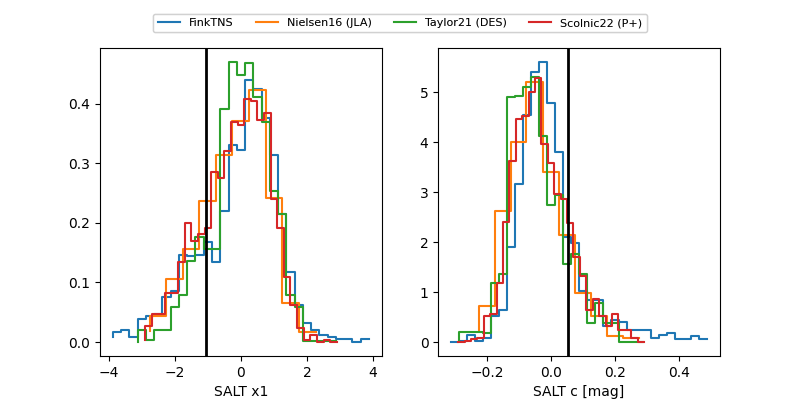

FINK: ZTF25ablvcvy
Lasair: ZTF25ablvcvy
ALeRCE: ZTF25ablvcvy
TNS: 2025vio
YSE: 2025vio
ZTF25ablvcvy (ztf,fink)
2025vio (tns,yse)
equatorial (ra, dec) = (59.2471,-19.95335)
galactic (l, b) = (213.6111,-47.10881)

last atlaso=19.71, ztfg=19.73
1 atlaso, 2 ztfg detections